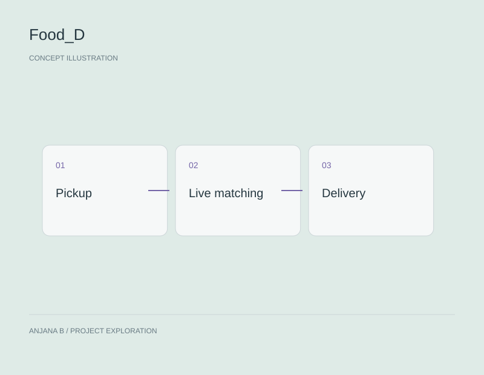

Full-stack / Delivery
Food_D
Live matching for delivery workflows.
React · Spring Boot · Go
01 / Overview
About the project.
A real-time delivery optimization project focused on live delivery matching, using React, Spring Boot, and Go.
02 / Features
What it does.
- Live delivery matching
03 / Technology
How it comes together.
- 01Delivery requests
- 02Live matching
- 03Delivery workflow
Component overview / project concept
- Technology
- React · Spring Boot · Go
04 / Visuals
Project visual.

05 / Explore